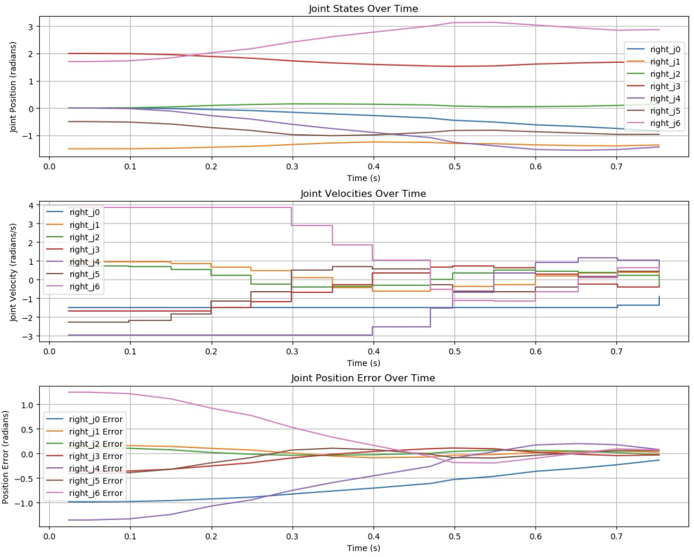
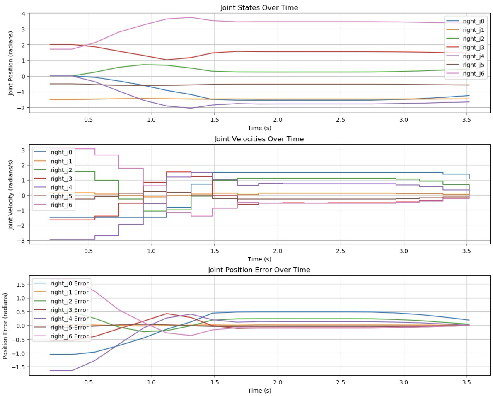

Controller
We experimented with various horizon lengths (N = {3, 5, 10, 20, 30, 40}) and time steps (∆t = {25, 50, 100} ms) for the controller.
At the scale of 25 ms between control input, our solver computation time began to exceed our desired time step, even with shorter horizons.
We believe that this was a result of our control implementation and hardware constraints. We utilized the ”set joint velocities” method
provided by the Intera SDK package [3], which automatically converted desired joint velocities into joint torques. This level of abstraction
was convenient for control purposes; however, it added to the total computation time on the order of 10 ms. However, at longer time steps,
we found our MPC to be quite performant in quickly moving the arm with good convergence toward the desired result. The figure below shows
a plot of using ∆t = 50 ms, and the arm was able to track to the target point in 0.7 seconds. Similar results were achieved
with N = {10, 20} and ∆t = {50, 100} ms.

Increasing the horizon generally decreased the amount of error in final joint position, however past N = 20 we ran into the same issue
of computation speed, causing our controller to be actuating with a time delay-induced model mismatch. This resulted in loss of stability
and oscillation about the end-effector goal point. An example of such oscillatory behavior is shown in the figure below. We had to manually
terminate the controller, leading to the extended period of zero control beginning at t = 1.75 seconds.

Though we achieved relatively quick motion with the MPC, due to space constraints in the laboratory we were unable to throw the ping-pong
ball from much further than 3 m from the robot arm. This typically provided the Sawyer with 0.6 seconds to hit the ball, a task which proved
infeasible for throws further from the robot's initial configuration. However, for throws where the ball was closer to the end-effector's
starting point, the controller was able to successfully hit the ball.